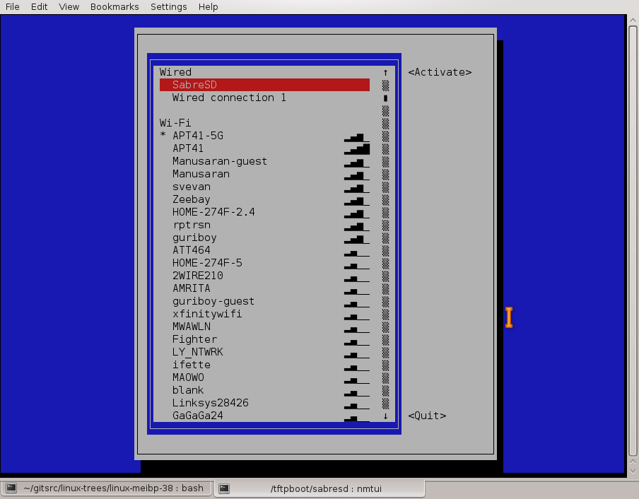
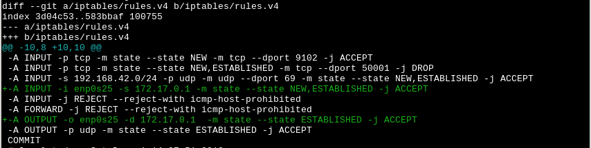

Prepared by Alison Chaiken and offered under
and offered under 
Prepared by Alison Chaiken and offered under
and offered under 
Goal: Configure a target running u-boot to retrieve files via TFTP and a laptop to serve them, both using static IP addresses for convenience. The command output shown here comes from a Boundary Devices Nitrogen8MQ board running U-boot 2020.10 and connected to a laptop running Debian, but the instructions are far more general.
Connect an appropriate cable between the console port (often a DB9 or USB connector) of your target and a USB connector on your laptop. On Linux, the USB connection should appear at /dev/ttyUSB0. By default, this device is not accessible to non-root users. Fix this problem with:
<user@localhost>$ sudo addgroup $USER dialout
Then connect a LAN cable between the laptop and the target, either using a crossover cable or by interposing a network switch. The LED next to the Ethernet connector on the board should light up.

NetworkManager's nmtui shows the new laptop static IP connection under
the "Wired" heading.
First, set the static IP address on the host with which it will communicate with the board. The easiest way is use NetworkManager's nmcli. Here "SabreSD" is the name of the connection, enp0s25 is the (weird) name of the wired network interface and 172.17.0.5 is my elected IP address:
<user@localhost>$ nmcli con add con-name SabreSD ifname enp0s25 type ethernet ip4 172.17.0.5/16 <user@localhost>$ nmcli con show SabreSD
The second command shows the settings for the new connection, which now can be selected from nmtui ncurses configurator (see figure) or your favorite NetworkManager GUI. Alternatively, you can use a script to put your other wired connection down and choose the new static IP connection:
<user@localhost>$ nmcli con down Wired\ connection\ 1 <user@localhost>$ nmcli con up SabreSD Connection successfully activated (D-Bus active path: /org/freedesktop/NetworkManager/ActiveConnection/19)
When finished with your session connected to the board, use ntmui or nmcli to restore the default 'Wired connection 1'.
Test the network connection from board to host by pinging the laptop from the U-boot prompt:
U-Boot > ping 172.17.0.5 Using FEC device host 172.17.0.5 is alive U-Boot >
U-Boot does not respond to pings, so until the board is booted, only host-side checking is possible.
Now create a /srv/tftp directory and copy your root filesystem, kernel and device-tree there. U-boot follows symbolic links, so a lot of developers create a symlink to the device-tree and kernel files so that the U-boot environment variables (see below) need not ever change.
Now install needed host-side software packages: tftpd-hpa nfs-kernel-server; nfs-common; nfswatch
Configure tftpd-hpa if necessary by editing /etc/default/tftpd-hpa and /etc/init/tftpd-hpa.conf. Make sure TFTP_DIRECTORY everywhere is /srv/tftp.
Restart tftpd-hpa if any of the config files were modified:
<user@localhost>$ sudo systemctl restart tftpd-hpa
Make sure that tftpd-hpa is happy:
<user@localhost$ sudo systemctl -l status tftpd-hpa
[sudo] password for alison:
● tftpd-hpa.service - LSB: HPA's tftp server
Loaded: loaded (/etc/init.d/tftpd-hpa; generated)
Active: active (running) since Sat 2023-05-27 15:27:02 PDT; 1h
50min ago
Docs: man:systemd-sysv-generator(8)
Tasks: 1 (limit: 18155)
Memory: 31.9M
CPU: 28.414s
CGroup: /system.slice/tftpd-hpa.service
└─5243 /usr/sbin/in.tftpd --listen --user tftp --address --
--:69 --secure /srv/tftp
May 27 15:27:02 remerge systemd[1]: Starting tftpd-hpa.service - LSB:
HPA's tftp server...
May 27 15:27:02 remerge tftpd-hpa[5216]: Starting HPA's tftpd:
in.tftpd.
May 27 15:27:02 remerge systemd[1]: Started tftpd-hpa.service - LSB:
HPA's tftp server.
Now your server should be listening for tftp connections:
<user@localhost>$ netstat -l | grep tftp udp 0 0 0.0.0.0:tftp 0.0.0.0:* udp6 0 0 [::]:tftp [::]:*
Debugging tftp: the steps so far start tftp and listen on a port, but will not necessarily allows connections depending on local network configuration. When 'ping 172.17.0.5' works from the u-boot, but tftp transfers time out, check what 'tcpdump -i enp0s25' says:
<user@localhost>$ sudo tcpdump -i enp0s25 07:57:06.212950 IP 172.17.0.1.1071 > 172.17.0.5.tftp: 53 RRQ "/srv/tftp/uImage-imx6" octet timeout 5 blksize 1468 07:57:06.212981 IP 172.17.0.5 > 172.17.0.1: ICMP host 172.17.0.5 unreachable - admin prohibited, length 89
"admin prohibited" means that security is preventing the tftp connection. First add the board's IP address (here 172.17.0.1) to /etc/hosts.allow if needed. Then add a few rules to /etc/iptables/rules.v4, keeping in mind that I am not an expert on network security:

Modify iptables rules to allow tftpd-hpa to answer connections for tftp,
then reload the rules with "iptables-apply /etc/iptables/rules.v4"
Don't forget to save the rules if they work with "iptables-save"
Another tftp-debugging tip: if tftp fails and your board is connected via USB adapter, type 'usb start' at the U-boot prompt and try again.
Optional: tell systemd to start tftpd-hpa and the NFS server at boot:
<user@localhost>$ systemctl enable nfs-kernel-server <user@localhost>$ systemctl enable tftpd-hpa
Note that tftpd-hpa and NFS are potentially security risks if configured improperly. Do not expose your $HOME via tftpd-hpa! Do not configure NFS to serve files from /!
What you've done so far will enable the board to access files in /srv/tftp via tftp, but will not tell NFS to make the root filesystem available for mounting. Edit the /etc/exports file to configure NFS:
# /etc/exports: the access control list for filesystems which may be exported # to NFS clients. See exports(5). /srv/tftp 172.17.0.1(rw,sync,no_subtree_check,no_root_squash)
Here /srv/tftp is the default directory that tftpd-hpa exposes to the target and 172.17.0.1 is the IPv4 address I've selected for it. The parameter no_root_squash is optional and permits root to login to the target without a password. Once you've modified /etc/exports, type
<user@localhost>$ sudo systemctl restart nfs-kernel-server
if the server is already running so that it will re-read its configuration file.
The following kernel options are necessary as of Linux 4.1 to make mounting the root filesystem via NFS work. Note static compilation (=y) since loading of modules will not work until the filesystem is mounted.
CONFIG_KERNFS=y CONFIG_NFS_FS=y CONFIG_NFS_V2=y CONFIG_NFS_V3=y CONFIG_NFS_V3_ACL=y CONFIG_NFS_V4=y CONFIG_ROOT_NFS=y CONFIG_NFS_USE_KERNEL_DNS=y CONFIG_NFS_ACL_SUPPORT=y CONFIG_NFS_COMMON=y CONFIG_IP_PNP=y
Also choose one of these:
CONFIG_IP_PNP_DHCP CONFIG_IP_PNP_BOOTP CONFIG_IP_PNP_RARP
The standard U-boot parameters needed to get this set-up working:
bootdelay=10
bootargs_net=console=${console},${baudrate} ip=${ipaddr} root=/dev/nfs nfsroot=${serverip}:${rootfs} rootwait rw
ethact=FEC
ethprime=FEC
fdt_high=0xffffffff
ip_dyn=no
netload=tftp ${fdt_addr} ${dtbfile};tftp ${loadaddr} ${uimage}
netboot=setenv bootargs ${bootargs_net};run netload;bootm ${loadaddr} - ${fdt_addr}
Implementation-specific parameters: console, baudrate, ipaddr, serverip, rootfs, fdt_addr, dtbfile, loadaddr and uimage. Pick values appropriate for your architecture and filesystem layout. Console generally matches "tty*", baudrate is typically 115200, and ipaddr and serverip are static IPv4 addresses (i.e., ones that don't start with 192 or 127). Any well-formed address can be chosen for your devices if neither is connected to an external network. The pathnames in dtbfile and uimage variables are relative to /srv/tftp, if that's where the files are located.
Don't forget to enable sshd on your target:
<user@localhost>$ systemctl enable sshd.socket <user@localhost>$ systemctl start sshd.socket
Note that you start the socket, not "systemctl start sshd@0.service". The way systemd's socket-based activation works, the listener on the socket will start the service automagically when a client tries to connect.
With these parameters, 'run netboot' at the U-boot prompt should bring the board up. The most common mistake is to omit 'ip_dyn=no'. If you do, tftp will work fine, but then the board will get a dynamic address when the Linux kernel starts. Note that failure to edit /etc/exports or to restart nfs-kernel-server after editing /etc/exports also mean that tftp will start, but NFS will fail.
Once the board boots, ping it from Linux:
<user@localhost>$ ping 172.17.0.1 Network is unreachable <user@localhost>$ ping -I enp0s25 172.17.0.1 PING 172.17.0.1 (172.17.0.1) 56(84) bytes of data. 64 bytes from 172.17.0.1: icmp_seq=1 ttl=64 time=0.372 ms
'ping -I enp0s25' insures that the laptop tries to use the hard-cabled interface. I've seen ping report 'Network is unreachable' when wlan0 is enabled and enp0s25 is plugged in. U-boot can send pings but does not respond, so it's necessary to boot the board to ping the other way.


alison@she-devel.com (Alison
Chaiken)